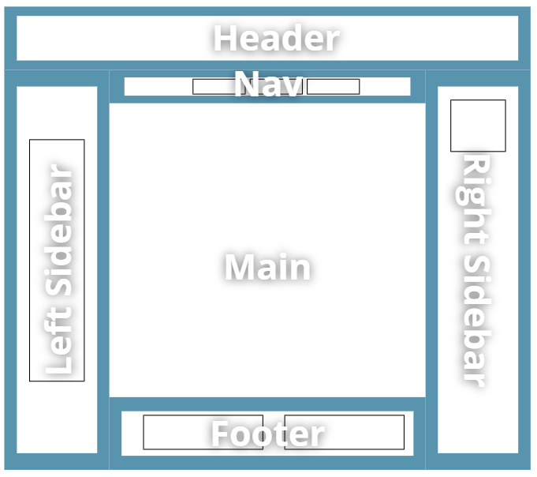
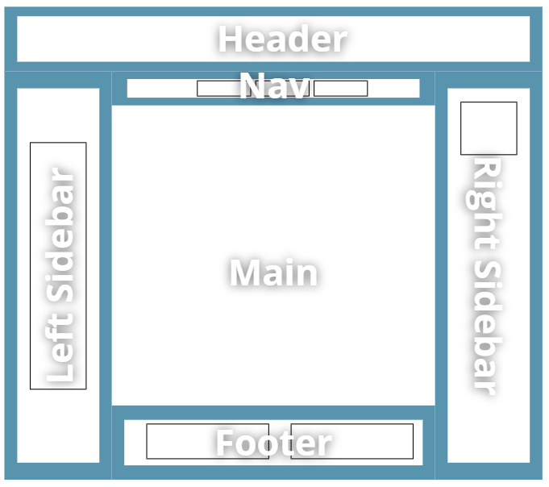

Sobre mi web
Para mi página web he decidido utilizar un layout que consiste de dos columnas laterales, un nav, un
footer y el header.

Aqui esta el video explicativo de mi página:

Daniel Núñez
17 Años
Vicalvaro, Madrid
Caminante, son tus huellas
el camino y nada más;
Caminante, no hay camino,
se hace camino al andar.
Al andar se hace el camino,
y al volver la vista atrás
se ve la senda que nunca
se ha de volver a pisar.
Caminante no hay camino
sino estelas en la mar.
Para mi página web he decidido utilizar un layout que consiste de dos columnas laterales, un nav, un
footer y el header.

Aqui esta el video explicativo de mi página: